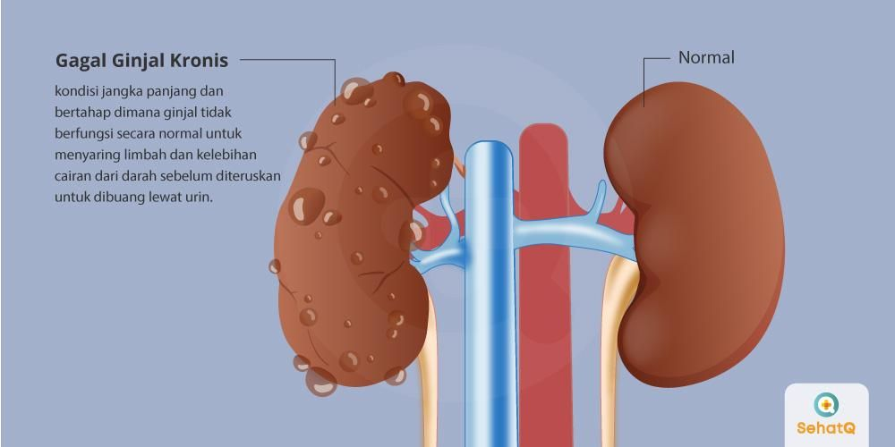

Memahami Stadium Penyakit Ginjal: Dari Ringan Hingga Gagal Ginjal

Gagal ginjal kronis adalah suatu proses patofisiologis dengan etiologi yang beragam, yang mengakibatkan penurunan fungsi ginjal yang progresif, dan pada umumnya berakhir dengan gagal ginjal. Gagal ginjal merupakan suatu keadaan klinis yang ditandai dengan menurunnya fungsi ginjal yang bersifat irreversible, dan memerlukan terapi pengganti ginjal yaitu berupa dialisis atau transplantasi ginjal. Selain itu gagal ginjal kronik juga dapat diartikan dengan terjadinya kerusakan ginjal (renal damage) yang terjadi lebih dari 3 bulan, berupa kelainan struktural atau fungsional, dengan atau tanpa penurunan laju filtrasi glomerulus (LFG), dengan manifestasi adanya kelainan patologis, adanya kelainan ginjal seperti kelainan dalam komposisi darah atau urin serta adanya kelainan pada tes pencitraan (imaging tests) serta laju filtrasi glomerulus (LFG) kurang dari 60 ml/mnt/1.73 m2 (Nurchayati, 2010).
Berbagai kondisi medis, seperti diabetes dan tekanan darah tinggi, adalah penyebab umum dari GGK kronis, seperti:
Pada tahap awal, GGK mungkin tidak menimbulkan gejala yang nyata. Namun, ketika kondisinya semakin memburuk, gejala seperti kelelahan, tekanan darah tinggi, pembengkakan kaki, dan penurunan berat badan tanpa sebab yang jelas dapat muncul. Diagnosis ditegakkan melalui pemeriksaan darah, urine, serta pemindaian gambaran seperti USG atau CT scan.

Langkah-langkah pencegahan meliputi:
Sumber informasi: National Kidney Foundation. (2022). Chronic Kidney Disease, Gagal Ginjal Kronis